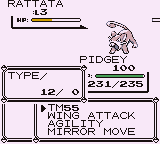

AttackDex/RBY:255
From Glitch City Wiki
(Redirected from AttackDex/Y:255)
Jump to navigationJump to search(↑ Back to the AttackDex index.)
| Name (transcribed): TM55  Identifier (HEX): FF Identifier (DEC): 255 Applicable for Super Glitch?: No Effect byte: 0x3C Effect pointer: ? Type : (variable name) (0x32) Animation/Mirror Move: None (internally String Shot (0x51)) Power: 97 Accuracy: 0/256 PP (no PP Ups): 0
|
TM55 is a (variable name) (0x32)-type glitch move in Pokémon Red, Blue, and Yellow.
It is a no effect glitch move which is normally impossible to use from the fight menu. Attempting to use this glitch move this move will only elapse a turn.
No PP from this move is used up, nor does any animation play after it is selected.
Glitch Pokémon which learn TM55 (0xFF)
Red/Blue
- .PkMn (0xDF): Level 62
- /PkMn ▼PkMn (0xE0): Level 254
- Glitch Pokémon (0xFA): Level 254
Yellow
- 4 4 (0xBF): Level 255
- u (0xC7): Level 62
- Q (0xFF): Level 248
- PkMn pゥ ゥ (0xCE): Level 255
- PkMn ? A (0xD2): Level 62
- ゥゥ] (0xD3): Level 62
- ゥ (0xD4): Level 254
- PkMn (0xD8): Level 254
- Z ゥ (0xE5): Level 255
- 4( h 4 ? (0xED): Start
- 'B' ゥ (0xF1): Level 230
- ゥ ゥェ ゥ ▷ (0xF2): Level 49
- × 'rゥ. 4- (0xFD): Level 255